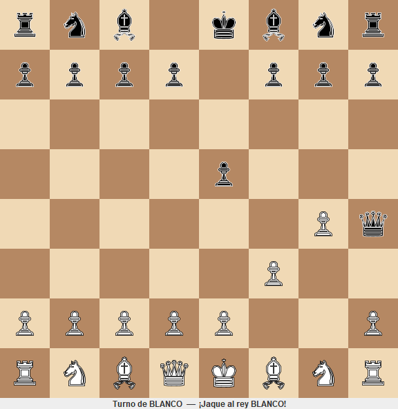
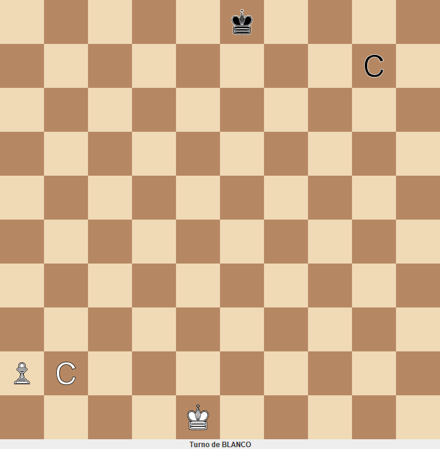

Ingeniería de Software · TPO
Así quedó nuestro ajedrez
Quedó implementado todo lo que piden los diagramas UML: el núcleo con las reglas, dos formas de jugar (consola y ventana) y los tests. Esta página resume cómo está armado y cómo funciona.
- Alcance obligatorio completo
- 92 tests en verde
- UML al día con el código
Núcleo + adaptadores
Las reglas del ajedrez viven en un solo módulo que no sabe nada de pantallas. La consola y la ventana solo traducen: leen lo que hace el usuario, se lo pasan al núcleo por la interfaz JuegoDeAjedrez y muestran la respuesta.
Principal crea todas las piezas del sistema y las conecta. Es el único que hace new.
JuegoDeAjedrez- juego
- El puerto
JuegoDeAjedrezy laPartida, que guarda el tablero y el turno - reglas
- Validador con dos reglas (turno y no dejar al rey en jaque) y el detector de jaque
- movimiento
- Cómo se mueve cada pieza y la jugada como objeto
- modelo
- Tablero inmutable, piezas, posiciones y colores
- configuracion
- Las seis piezas clásicas y la posición inicial
Las flechas apuntan siempre hacia el núcleo. Como su pom.xml no tiene dependencias, el compilador no le deja importar Swing ni la consola.
No hay una clase por pieza
Cada pieza es un TipoDePieza con un nombre y una lista de reglas de movimiento. Para agregar una pieza nueva se arma otra lista, sin tocar código existente.
| Pieza | Reglas que la forman |
|---|---|
| Torre | ReglaDeslizante(ORTOGONALES, SIN_LIMITE) |
| Alfil | ReglaDeslizante(DIAGONALES, SIN_LIMITE) |
| Dama | Las reglas de la torre y las del alfil, juntas |
| Rey | ReglaDeslizante(TODAS, 1) |
| Caballo | ReglaDeSalto(SALTOS_DE_CABALLO) |
| Peón | ReglaAvanceDePeon + ReglaCapturaDePeon |
Qué pasa cuando alguien juega e2 e4
- Consola. Traduce
e2ye4aPosicion(4, 1)yPosicion(4, 3)y llama ajuego.jugar(desde, hasta). - Partida. Le pide a la pieza de e2 sus jugadas candidatas. Si ninguna llega a e4, la jugada se rechaza.
- Validador. Revisa que la pieza sea del jugador de turno y que la jugada no deje a su rey en jaque. Para eso la prueba en un tablero nuevo, sin tocar el original.
- Jugada. Se aplica, cambia el turno y el detector avisa si el rival quedó en jaque.
- Respuesta. Vuelve un
ResultadoJugaday la consola redibuja el tablero.
Turno de BLANCO (ejemplo: e2 e4, o 'salir'): e2 e4 8 t c a d r a c t 7 p p p p p p p p 6 . . . . . . . . 5 . . . . . . . . 4 . . . . P . . . 3 . . . . . . . . 2 P P P P . P P P 1 T C A D R A C T a b c d e f g h Turno de NEGRO (ejemplo: e2 e4, o 'salir'):
Cómo se comprobó
- 92 tests automáticos en verde (74 del núcleo y 18 de la consola), sin abrir ninguna interfaz.
- Extensibilidad: un test crea una pieza nueva (torre + caballo) y otro juega en un tablero de 10x10. Ninguno toca el núcleo.
- Partida real por consola: el juego no deja que el rey capture una dama defendida.
- Ventana Swing probada con clics simulados, abajo.
- Reglas del roadmap: el núcleo no usa consola, Swing ni archivos, no hay
switchsobre piezas y el único8está enTableroEstandar.


Lo que falta (opcional)
- Jaque mate
- Enroque
- Captura al paso
- Promoción
- Tablas
Hoy, después de un mate, la partida no termina: rechaza todas las jugadas. El jaque mate es el primer opcional para sumar, porque reutiliza el validador.
Cómo correrlo
mvn package
java -jar ajedrez-app/target/ajedrez.jar
java -jar ajedrez-app/target/ajedrez.jar --guiEl detalle está en el README del repo y en los diagramas de la carpeta uml/.